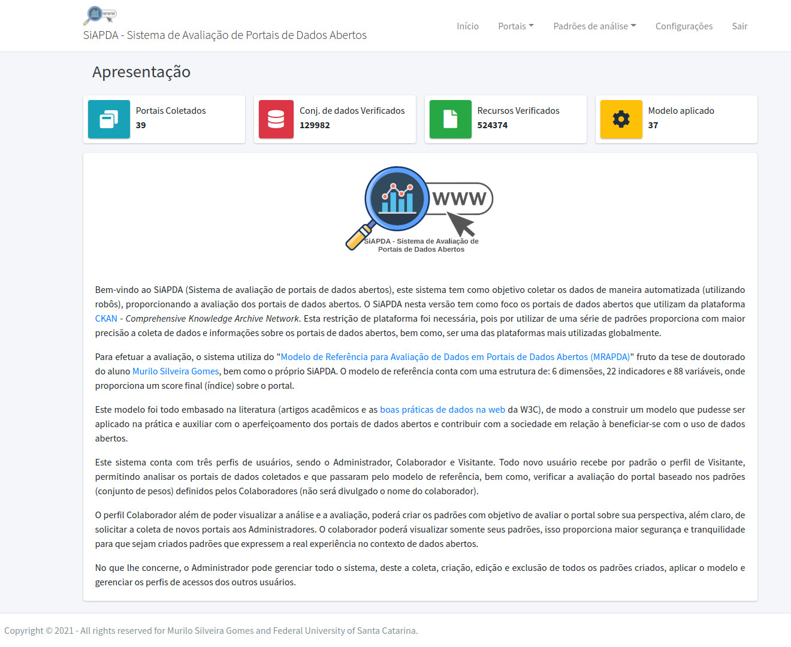
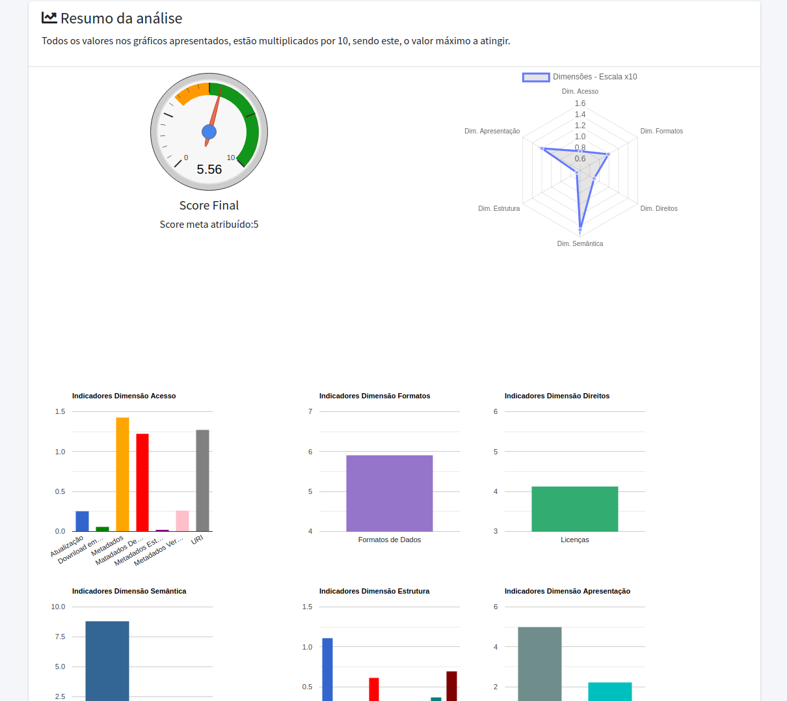
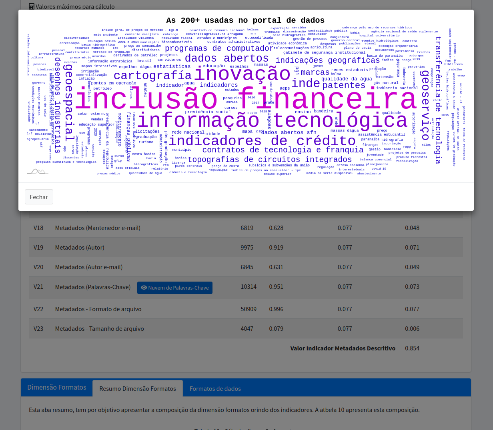
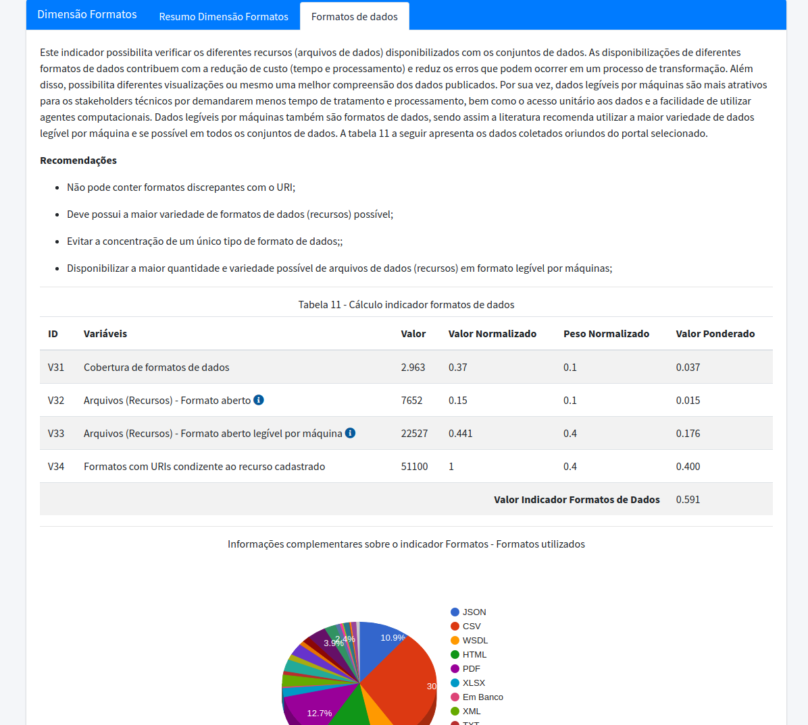

Informação sobre o Projeto:
Este projeto foi fruto do meu trabalho de tese, onde foi proposto o Modelo de Referência da Avaliação de Portais de Dados Abertos - MRAPDA. Para tornar possível a coleta automatizadas dos dados, aplicação do modelo e a avaliação, foi desenvolvido este sistema denominado Sistema de Avaliação de Portais de dados Abertos - SiAPDA. O projeto também conta com a WebPage da pesquisa, onde é possível ter acesso ao documento da tese, apresentação da defesa, visualizar as publicações e ter acesso ao SiAPDA. O Acesso é gratuito, basta realizar o cadastro para conhecer a ferramenta e visualizar os resultados. Vale destacar que, apenas o administrador pode realizar as coletas.
Detalhes do Projeto:
- Cliente:Murilo Silveira Gomes | Universidade Federal de Santa Cataria (UFSC)
- Segmento:Poder Público / Empresas Privadas que atuam na disponibilização de dados abertos
- Tecnologias:Python, Flask, HTML, CSS, Jquery, Ajax, Selenium, Requests, Beatifulsoup, Pandas, MySQL, outros...
- Data:23 de Março de 2021
- Registro:Certificado de Registro de Software
- Acessar
Compartilhar: